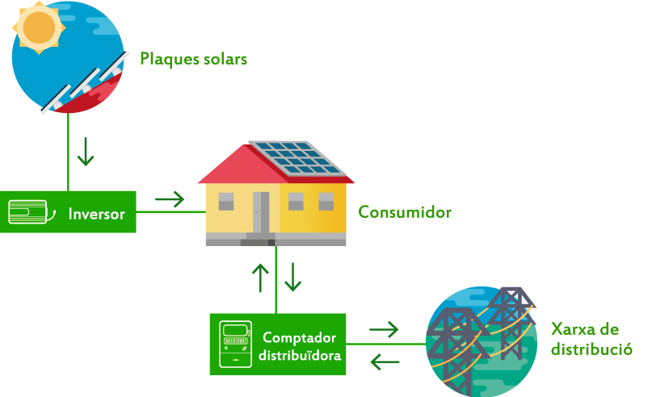

Què és l'autoconsum?
L'autoconsum és una manera de produir la teva pròpia energia elèctrica per al consum personal a l'habitatge. En el cas de l'autoproveïment fotovoltaic solar, l'energia es genera mitjançant plaques solars.
Aprofitar l'energia solar és una opció cada cop més comuna, ja que la tendència és moure'ns cap a una energia verda, sense necessitat d'explotar els recursos naturals no renovables com el carbó o el petroli.
La solució és molt popular a Espanya, ja que al nostre país comptem amb aproximadament 300 dies de sol de 365, fet que significa una producció d'energia gairebé ininterrompuda al llarg de l'any.
A més, comptem amb una irradiació solar alta, cosa que significa que la capacitat de producció és superior comparada amb altres zones d'Europa, per exemple Alemanya o Holanda, on l'autoconsum residencial té molta més penetració que a Espanya, tot i tenir moltes menys hores de sol.
Els habitatges poden garantir un preu del kWh estable, fins i tot en temps d'incertesa, o quan ens trobem a nous conceptes com el “topall de gas”.
En resum, aquests són els principals avantatges de l'autoconsum solar:
Produeix la teva pròpia energia
Col·labora a fer un món més sostenible
Estalvia en els teus rebuts
Augmenta el valor del teu habitatge o empresa
Com funciona l'autoconsum solar?
Un dels avantatges de les instal·lacions d'autoconsum és la seva senzillesa..
Les plaques solars obtenen l'energia del Sol i la tranformen en energia elèctrica.
El corrent continu produït és transformat en corrent altern per l'inversor solar. Aquesta energia es fa servir per a l'autoproveïment de l'habitatge..
Tipus d'autoconsum solar
Hi ha diversos tipus d'autoconsum solar, depenent de la ubicació on està instal·lat el sistema o si està connectat a la xarxa elèctrica o no. Fem un repàs a les seves característiques...
Autoconsum connectat o aïllat
L'autoconsum residencial es divideix en autoconsum connectat a la xarxa o aïllat (que està desconnectat de la xarxa). També podem parlar d'autoconsum amb excedents abocats a la xarxa o sense.
En el cas de l'autoconsum connectat a la xarxa, la instal·lació tindrà dues connexions: una al sistema elèctric de l'habitatge i una altra a la xarxa de distribució, propietat d'una companyia elèctrica.
L'autoconsum aïllat, per altra banda, suposa la desconnexió total de la xarxa de distribució. Aquesta segona opció implica que, si no hi ha bateries o emmagatzematge d'energia, l'habitatge no tindrà energia elèctrica. És més, moltes vegades les bateries no són suficients i en aquests casos caldrà comptar amb un generador elèctric. Tot això suposa més inversió per al client i més risc per al client de quedar-se sense electricitat, davant de quedar-se connectat a la xarxa.
Què passa amb l'excedent d'energia produït en aquestes dues situacions?
En el cas de l'autoconsum connectat, l'energia es pot abocar a la xarxa, obtenint una compensació pels excedents.
Si la instal·lació és aïllada, l'energia es pot emmagatzemar en bateries i el propietari pot disposar-ne en qualsevol moment.
Depenent de les necessitats i què cerca cada propietari d'habitatge, es pot optar per una o altra.
Això sí, cal tenir en compte que en períodes de baixa producció fotovoltaica, l'energia emmagatzemada pot no ser suficient per a l'abastament de la casa. És per això que recomanem mantenir la vivenda connectada a la xarxa elèctrica.
També es pot optar per una instal·lació connectada sense compensació d'excedents, però aquesta opció no ajuda a maximitzar la rendibilitat del sistema.
Autoconsum individual o compartit
Si parlem de tipus d'instal·lacions d'autoproveïment també cal esmentar que poden ser per a ús individual o per a ús compartit.
L'autoconsum compartit, com també indica el seu nom, és quan a la mateixa instal·lació estan connectats diversos habitatges o una comunitat de veïns. Aquest tipus d'instal·lacions són menys comunes, ja que el mesurament del consum de cada habitatge és complicat.
A les comunitats de veïns on hi ha un sistema instal·lat, se sol utilitzar per a zones comunes com els passadissos de l'edifici, garatges o motors per a la piscina. D'altra banda, l'autoconsum individual és el que abasteix els habitatges unifamiliars.
Industrial o per a empreses
L'autoconsum industrial és una opció que consideren cada vegada més empreses..
El funcionament de les mateixes no varia i, de la mateixa manera que en el cas residencial, les empreses es beneficien d'importants estalvis a les factures.
Les instal·lacions fotovoltaiques per a empreses es diferencien de les residencials principalment per la mida, que sol ser molt superior. Per altra banda el consum energètic sol ser en horaris de dia, a diferència d'un habitatge, on es creen patrons de consum d'energia al llarg del dia..
Quins són els elements d'un sistema d'autoconsum solar?
Ara que coneixeu què és, com funciona i quins són els tipus d'instal·lacions d'autoconsum, convé repassar els elements que formen aquests sistemes. Bàsicament són aquests 4:
- Els panells solars
- L'inversor solar
- L'estructura de suport
- El cablejat

A més d'això, es pot comptar amb altres elements com ara: optimitzadors de potència o bateries d'emmagatzematge.
També es pot optar per incloure aparells com ara els carregadors de vehicles elèctrics.
Subvencions per a l'autoconsum
Europa té com a objectiu passar a una energia més neta. Com a part de la transició energètica, l'autoconsum és un dels elements més importants que la poden fomentar.
Per donar suport a l'autoconsum, es poden obtenir les subvencions següents per a plaques solars:
- Bonificacions de l'IBI
- Bonificacions de l'ICIO
- Deduccions de l'IRPF
- Deduccions autonòmiques
- Deduccions estatals
Aquestes subvencions i ajuts augmenten la rendibilitat de l'autoconsum, però no són imprescindibles, perquè l'autoconsum és rendible per si mateix!.
A més dels ajuts que es poden obtenir per la instal·lació fotovoltaica, la compensació d'excedents també suma la rendibilitat de l'autoconsum.